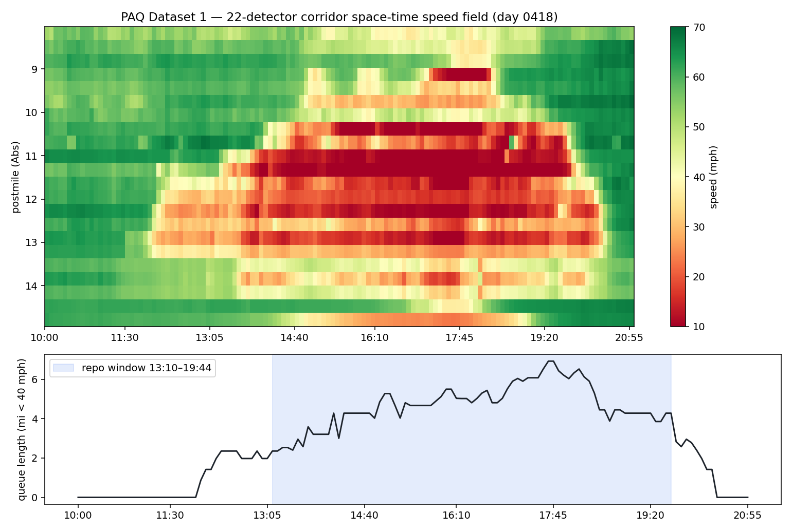
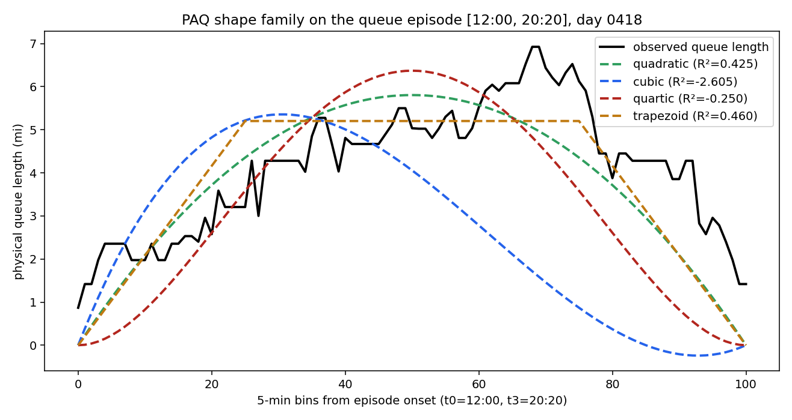

Rerun:
python reproduce_paq.py — complete dataset in data/, no external paths.
Verified by python -m cbi_pipeline.repro_gates.Per-day shape fits, all 22 congested days
| day | peak_queue_mi | episode | r2_quadratic | r2_cubic | r2_quartic | r2_trapezoid |
|---|---|---|---|---|---|---|
| 401 | 4.45 | 13:45-18:45 | 0.069 | -3.26 | -1.492 | 0.293 |
| 402 | 5.08 | 13:45-18:55 | 0.734 | -1.891 | -0.037 | 0.744 |
| 403 | 4.65 | 13:45-19:30 | 0.436 | -2.248 | -0.857 | 0.585 |
| 404 | 5.67 | 12:15-19:40 | 0.591 | -1.656 | 0.31 | 0.535 |
| 405 | 4.95 | 11:40-20:00 | 0.564 | -2.327 | -0.37 | 0.627 |
| 408 | 4.03 | 14:10-18:50 | 0.533 | -2.616 | -0.614 | 0.631 |
| 409 | 4.85 | 13:25-19:15 | 0.74 | -1.517 | -0.013 | 0.804 |
| 410 | 5.07 | 13:15-19:40 | 0.666 | -1.917 | -0.198 | 0.738 |
| 411 | 5.47 | 12:55-19:25 | 0.65 | -1.777 | -0.073 | 0.674 |
| 412 | 5.52 | 11:25-19:45 | 0.055 | -3.072 | -0.932 | 0.053 |
| 415 | 5.07 | 13:55-19:15 | 0.717 | -1.599 | -0.125 | 0.781 |
| 416 | 5.75 | 14:10-19:55 | 0.517 | -0.952 | -0.241 | 0.559 |
| 417 | 5.75 | 13:25-20:10 | 0.755 | -1.004 | 0.108 | 0.837 |
| 418 | 6.92 | 12:00-20:20 | 0.425 | -2.605 | -0.25 | 0.46 |
| 419 | 4.25 | 11:25-18:30 | -0.369 | -4.651 | -1.714 | -0.432 |
| 422 | 4.67 | 13:40-19:00 | 0.629 | -2.237 | -0.197 | 0.73 |
| 423 | 5.05 | 13:50-19:25 | 0.669 | -1.893 | -0.264 | 0.75 |
| 424 | 4.67 | 13:25-19:45 | 0.525 | -2.254 | -0.595 | 0.622 |
| 425 | 5.52 | 10:50-19:45 | 0.199 | -2.471 | -0.412 | 0.131 |
| 426 | 5.52 | 11:20-20:00 | 0.619 | -1.751 | 0.266 | 0.567 |
| 429 | 4.45 | 14:35-18:40 | 0.479 | -2.638 | -0.643 | 0.544 |
| 430 | 5.08 | 14:15-19:15 | 0.534 | -2.183 | -0.527 | 0.537 |
Figures


Key finding (median R² over 22 days): trapezoid 0.603 > quadratic 0.549 ≫ quartic −0.26 ≫ cubic −2.2. Long oversaturated queues on this corridor are flat-topped — the lab's later 'trapezoid atom' result, already visible in the PAQ repo's own data. Single-peak polynomials fit only the mild days. Also note the repo's hardcoded window [13:10–19:44] starts mid-queue; PAQ theory requires Q(t0)=Q(t3)=0, so fits here use each day's own zero-to-zero episode.
← all benchmark reproductions · part of cbi_plus